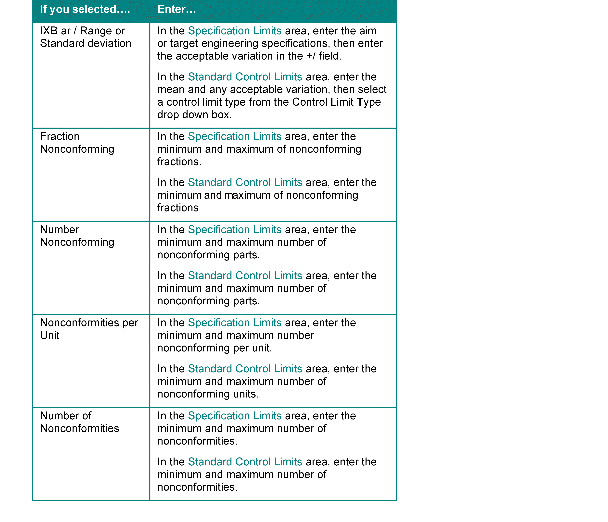

Use Test Definition to define new tests.
In the Test ID field, enter a new test ID.
In the Description field, enter a description for the new test.
From the Status drop down box, select the status for the new test.
You can select Active, Inactive, or Mark Deleted.
Click the Insert button to define the test.
The Test Step Definition dialog box appears.
The test ID, step number, and sequence number information appears automatically at the top of the dialog box.
In the Description field, enter a description for the test step definition.
In the Characteristic field, enter the appropriate dimension description.
You can also click the Characteristic button and select a dimension from the Browse for Dimensions table.
Select the appropriate dimension type from the Dimension Type drop down box.
You can select: Mean, +/-; Min/Max, or Max\Min.
In the Test Step Type area, select the appropriate test step type radio button.
Enter the appropriate information in the Specification Limits and Standard Control Limits areas. The information in these areas changes depending on the test step type radio button you select.
See the table below to determine what information you should enter for the test step type you have selected.

In the Frequencies area, enter the subgroup size (i.e. number of measurements per subgroup) and the sample size.
The sample size is the group from which subgroup size measurements are take.
For example, if you have 5 as a subgroup size and 10 as a sample size, the test inspects five out of ten pieces.
In the Classification field, enter the defect classification for this test.
You can click the Classification button and select a classification from the Defect Classification Coding table.
In the Gauge ID field, enter the appropriate gauge ID for the test.
You can click the Gauge ID button and select a gauge from the Gauge Methods table.
When you select a gauge ID, the gauge description appears in the Gauge Desc field.
Click Ok to save the new test.